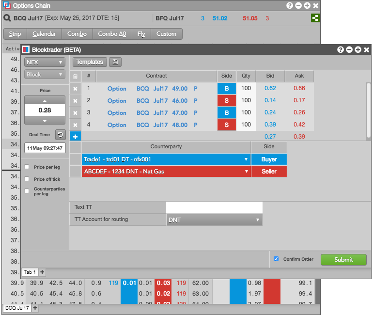

From the Options Chain, you can build complex options spreads and strategies to enter as blocks in the Blocktrader widget. These block trades can be configured and reported to the exchange using Blocktrader.
The Options Chain provides quick access to the following commonly-used strategies as well as a custom feature to define your own strategies.
When you select one of the strategies, the Options Chain automatically ensures that the strategy contains the proper relationship, quantities, and ratios for the strategy legs before it is sent to Blocktrader.
